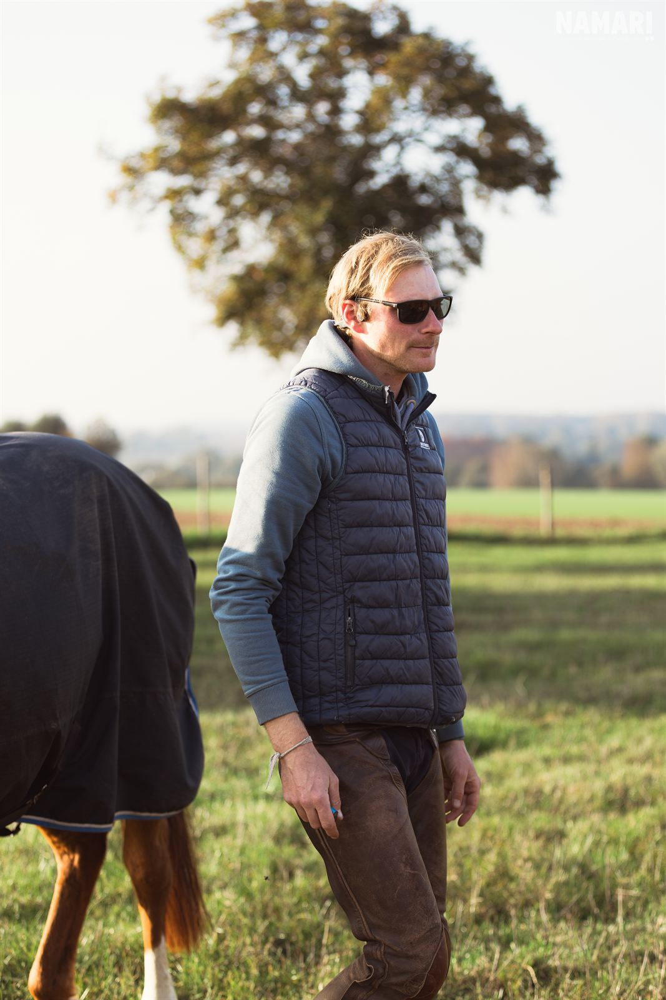

Photo à venir
[Nom du cheval]
- Race : [race]
- Âge : [XX] ans
- Taille : [X,XX] m
- Origines : [père × mère]
- Niveau : [niveau / discipline]
XX €
Pleumeleuc · Ille-et-Vilaine
Performance et respect – l'équitation de demain.
Pension, débourrage, valorisation, cours et vente de chevaux, à 25 minutes de Rennes.
Située au lieu-dit Quinfromel à Pleumeleuc, en Ille-et-Vilaine, l'Écurie de Quinfromel vous accueille sur un domaine de plus de 14 hectares d'un seul tenant, dans un cadre calme et naturel, à seulement 25 minutes de Rennes.
L'écurie est née en 2026 de la reprise d'une exploitation agricole, dont les bâtiments ont été réaménagés pour accueillir les chevaux. Elle suit le modèle de l'« écurie active » : des chevaux en mouvement, qui vivent en groupe et sortent chaque jour au paddock ou au pré, plutôt qu'enfermés en box 24 h/24.
Notre devise : « Performance et respect – l'équitation de demain ». Nous allions un travail technique et un accompagnement sportif sérieux avec le respect absolu du bien-être du cheval.


Cavalier professionnel et moniteur diplômé, dirigeant de l'écurie
L'écurie est dirigée par Nollan Renault, qui vit sur place. Il est titulaire du BPJEPS mention équitation et d'un Bac Pro Conduite et Gestion de l'Entreprise Hippique (CGEH), et il a obtenu une certification professionnelle sur le travail du jeune cheval, après une formation au Haras du Pin.
Fort de plus de dix ans d'expérience, il a été responsable d'écurie, cavalier et groom à La Petite Hublais (Betton), puis cavalier aux Écuries de Pehou. Depuis 2022, il est cavalier-moniteur indépendant : travail du cheval, coaching et enseignement dans plusieurs écuries et centres équestres de la région. Cette polyvalence lui permet d'assurer un suivi individualisé pour chaque cheval et chaque cavalier.
Un domaine de 14 hectares d'un seul tenant, aux sols de qualité, avec des installations pensées pour le confort des chevaux et le travail au quotidien.
Une stabulation sur aire paillée, où les chevaux vivent en groupe, au calme et en mouvement, avec accès au pré.
10 boxes, avec une sortie quotidienne au paddock pour chaque cheval.
13 hectares de prairies d'un seul tenant : de bons pâturages, et un foin de qualité produit sur place.
Une carrière en sable de 40 × 70 m pour le travail et l'entraînement.
Une sellerie, une aire de soins, des sanitaires et un club-house pour les propriétaires.
De nombreux chemins de balade aux paysages variés autour de l'écurie, et la forêt de Brocéliande à 20 minutes.
Les chevaux sont suivis 7 jours sur 7, matin et soir : surveillance, alimentation, curage, soins et sortie quotidienne au pré ou au paddock.
230 € / mois
Au pré, avec un hébergement en stabulation collective sur aire paillée.
400 € / mois
En box, avec une sortie quotidienne au paddock.
500 € / mois
Pension box + paddock, et 3 séances de travail par semaine avec Nollan Renault.
Tarifs mensuels. Contactez-nous pour connaître les places disponibles.
Pension débourrage : le jeune cheval est hébergé en box avec une sortie au paddock, et il travaille 5 séances par semaine avec Nollan Renault, spécialisé dans le travail du jeune cheval.
650 € / mois
Pension valorisation : box avec sortie au paddock, 5 entraînements par semaine et sorties en concours avec Nollan Renault. Le transport du cheval en concours est en option.
600 € / mois + 0,30 €/km de transport
Des cours individuels de 30 minutes, avec un enseignement technique adapté à chaque cavalier, et un accompagnement en compétition.
30 € le cours de 30 min
[Présentation de l'élevage : races, poulinières, étalon(s), naissances de l'année, suivi des poulains.]
Des chevaux travaillés et valorisés à l'écurie par Nollan Renault. Essais sur place, sur rendez-vous. Voir les chevaux disponibles.
Essais possibles sur place, sur rendez-vous.
XX €
XX €
Écurie de Quinfromel
Quinfromel
35137 Pleumeleuc
Téléphone : 06 62 60 53 21
Email : nollan.renault@gmail.com
Accès : à Pleumeleuc, à l'ouest de Rennes, sur l'axe Saint-Gilles – Romillé. 25 minutes de Rennes, 15 minutes de Montfort-sur-Meu et 8 minutes (6 km) de la RN12 (Rennes – Saint-Brieuc).
Visites sur rendez-vous.